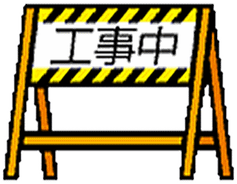

mengxia's sublunary library
this is my personal library. inside, you will find a collection of book recommendations, essays & esoterica; ruminations on literature, language, art, and life. i'm 梦霞mengxia, a depressed cybernetic girlthing, a bit obsessed with literature and memory.
interests: literature (obviously), including literature from latin america & asia (including south & southeast asia), cinema, anime & animation, foreign languages, visual novels, science fiction, paraliterature, illustration, philosophy, cybernetics, games, and more.
— ☾ —
something connects us, even if you feel like you're the only person in the world. maybe it's just the sadness we share, but maybe it's something else. even if you're the last person left on earth. even if you walk the streets, endless, like wittgenstein's mistress, and no one responds to your calls. i love you. take care out there.
the shelves: I

dear reader. i hope this message finds you well. if you stumble across this page, you may be looking for book recommendations, or simply to just learn more. depending on your background, you may be a reader, a non-reader, a watcher of anime / television / film, or maybe theatre or visual novels, illustration or other mediums. likely, you feel a certain amount of friction from transitioning from those mediums to literary ones. and this is valid! oft from poor school experiences, where readers are tasked with dismantling cannonized works of literature and tested for their "understanding" of them, in a process akin to trickle down economics: it doesn't work. this page serves as both a recommendation list for works of literature that have personal value to me, or i believe you, dear reader, will enjoy (as opposed to because the text is important to the canon) but also as a manifesto for my view of reading, learning and the future of literary art.
the canon is something readers and prospective writers should be cognizant of, but personal relation to the canon can vary wildly. i encourage interested readers to explore the canon, but it should not be out of obligation, but out of interest; learning should be from the ground up instead of trickling down from the canon. maybe you are interested in cinema, and seek to learn more about the works that influenced it. or television, like shelley referenced in breaking bad. or sartre in mr. robot. maybe you enjoy of asian culture or aesthetic, or want to learn more about a friend from a foreign culture. literature should be something that helps and broadens understanding, of others in the past as well as from other places in the world from the home and life you know personally.
reading is also just difficult. the world today, tomorrow moreso, even 'til the day you read this, is increasingly complex and fast paced and stimulus driven. short bursts, lights and action, pyrotechnics and overwhelming information. reading requires a focus and trance. attention spans are short. i am struck by this symptom of modern life too. it is immensely difficult for me to read, despite the sizable amount i do read. regardless, there is no shame in this; it may take some practice, take things at your own speed. and have fun with it!
Subtitle
Nullam sagittis condimentum libero consectetur dapibus. Vivamus aliquet elit id orci hendrerit, id congue nulla laoreet. Cras malesuada maximus dui id scelerisque. In convallis ligula non tincidunt ullamcorper. Maecenas risus magna, elementum sit amet arcu non, imperdiet condimentum justo. Aliquam aliquet neque quis luctus tincidunt. Aliquam nec arcu sed nisl viverra tincidunt.
Subtitle
Nullam sagittis condimentum libero consectetur dapibus. Vivamus aliquet elit id orci hendrerit, id congue nulla laoreet. Cras malesuada maximus dui id scelerisque. In convallis ligula non tincidunt ullamcorper. Maecenas risus magna, elementum sit amet arcu non, imperdiet condimentum justo. Aliquam aliquet neque quis luctus tincidunt. Aliquam nec arcu sed nisl viverra tincidunt.